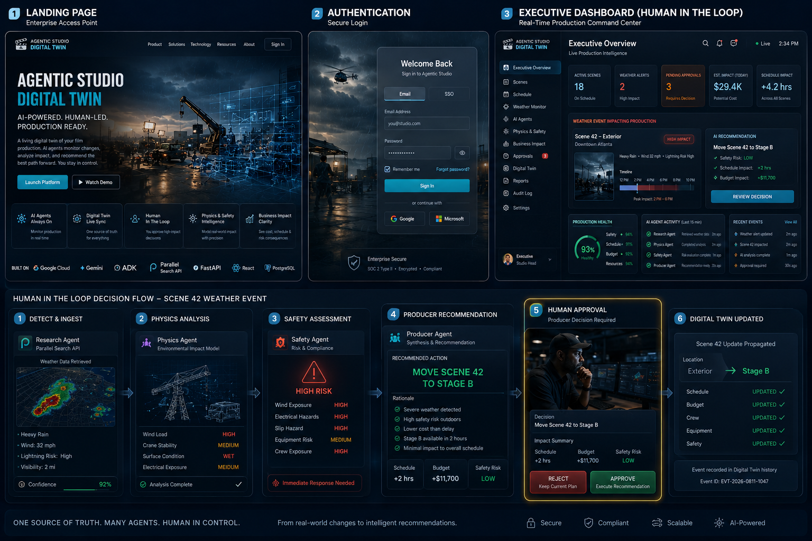

01
Research
Uses Parallel Search for grounded, sourced information and Gemini for a decision-ready summary.
Agentic Studio Digital Twin is a human-governed multi-agent system for responding to film-production disruptions. The September MVP focuses on one weather event and four agent roles: Research, Scheduling, Budget, and Producer.
One weather disruption moves through four specialized responsibilities. A human remains responsible for the final action.
Uses Parallel Search for grounded, sourced information and Gemini for a decision-ready summary.
Determines whether affected scenes should proceed, reschedule, or relocate.
Assesses the likely financial effect and whether producer sign-off is required.
Synthesizes the evidence into one recommendation for human review.

The quick review above is enough to understand the current direction. These longer materials are available when more detail is useful.
Label: Recorded dashboard simulation using presentation data; not yet connected to the live four-agent backend.
This walkthrough demonstrates the intended Scene 42 command-center experience, analysis refresh, recommendation, human approval, and visible Digital Twin update.
Label: Earlier vision exploration showing the original twelve-agent studio—not the current September MVP scope.
The public repository contains the Research, Scheduling, Budget, and Producer agent classes, their typed data contracts, tests, architecture documents, and project decision log.